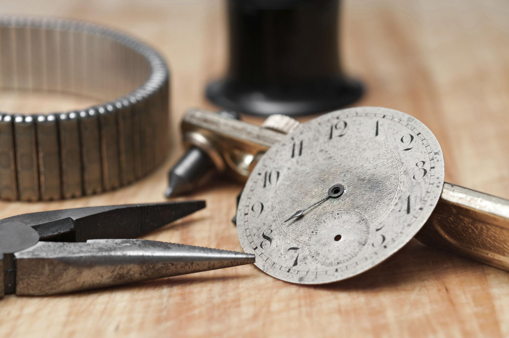
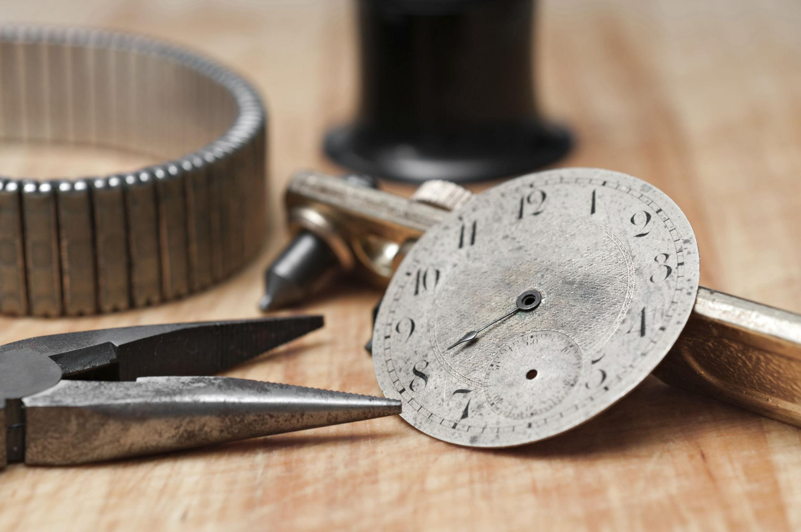

Independent Horologist
I carry out careful, conservation-led work on mechanical watches, focusing on methodical inspection, controlled servicing, and sympathetic restoration. The aim is always dependable function and respectful preservation of original character.
By appointment only. This website is a professional profile and overview of my horology practice.
Typical service workflow
Each piece is treated on its own merits, but a structured, best-practice service approach generally includes:
- Initial assessment, functional checks, and visual inspection of case and movement condition
- Photographic documentation before work begins
- Careful disassembly using appropriate supports and controlled handling
- Cleaning of components using suitable processes for oils, residues, and contamination
- Inspection for wear, corrosion, damage, or prior incorrect intervention
- Rectification or replacement of worn parts where feasible and appropriate
- Correct lubrication in the correct locations, using appropriate oils and greases
- Reassembly and staged functional testing throughout
- Regulation and performance checks across positions where relevant
- Final observation period, basic verification of stability, and completion notes
Vintage watches vary widely. Outcomes and timeframes depend on condition, parts availability, and prior history.
Case and movement restoration
Restoration work is approached conservatively, with an emphasis on preserving original geometry, surface character, and legibility. Where appropriate, case work can include cleaning, controlled preparation, and refinishing.
Preparation may include chemical cleaning and surface preparation steps designed to remove contaminants and provide a stable base for finishing processes, applied with care and with attention to compatibility of materials and coatings.
Finishing may include case polishing and refinishing, and where suitable, electroplating as part of a conservation-led restoration approach.


How I work
Appointment only
Work is undertaken by appointment, with structured inspection and documentation.
Assessment first
Any proposed work is guided by condition, feasibility, and a conservative approach to intervention.
Controlled process
Cleanliness, correct handling, and repeatable steps are treated as non-negotiable fundamentals.
Workshop details


 

Images used on this site are sourced from royalty-free libraries and are used under their published licences. :contentReference[oaicite:9]{index=9}